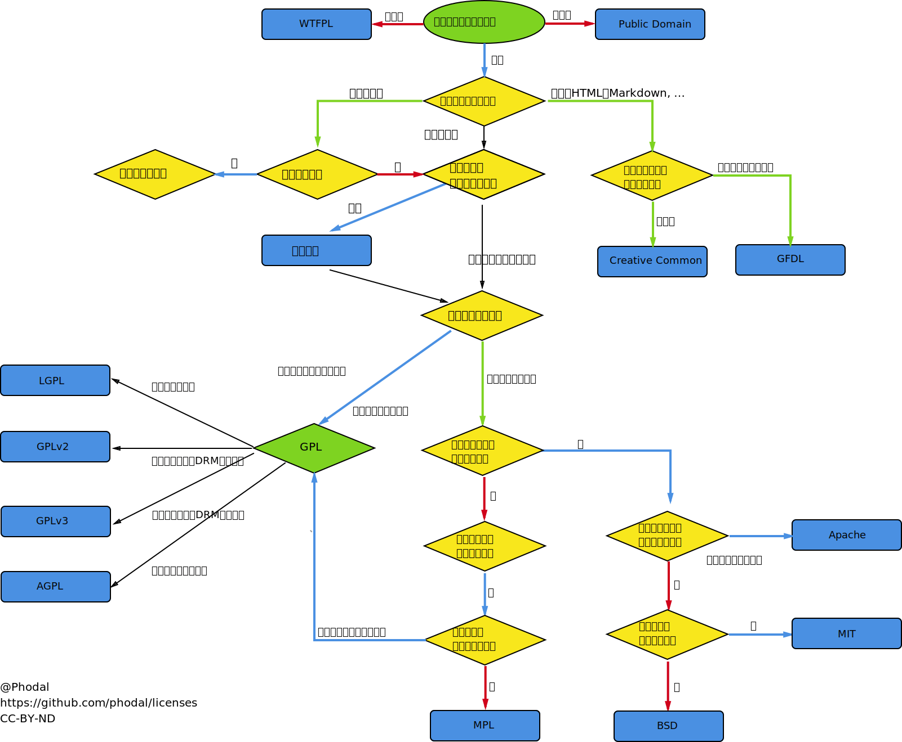
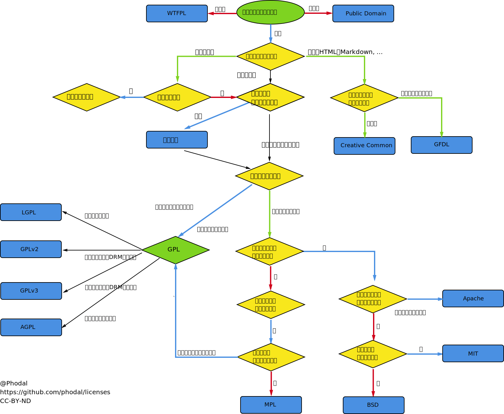

技术文章
书籍课程
《算法导论》
《计算机网络：自顶向下方法》
《TCP/IP详解》
《深入理解计算机系统》
csapp_labs：http://csapp.cs.cmu.edu/3e/labs.html
编译原理：《Compilers: Principles, Techniques and Tools》龙书
《分布式原理》MIT 6.824
Open Source License Explains

《算法导论》
《计算机网络：自顶向下方法》
《TCP/IP详解》
《深入理解计算机系统》
csapp_labs：http://csapp.cs.cmu.edu/3e/labs.html
编译原理：《Compilers: Principles, Techniques and Tools》龙书
《分布式原理》MIT 6.824
